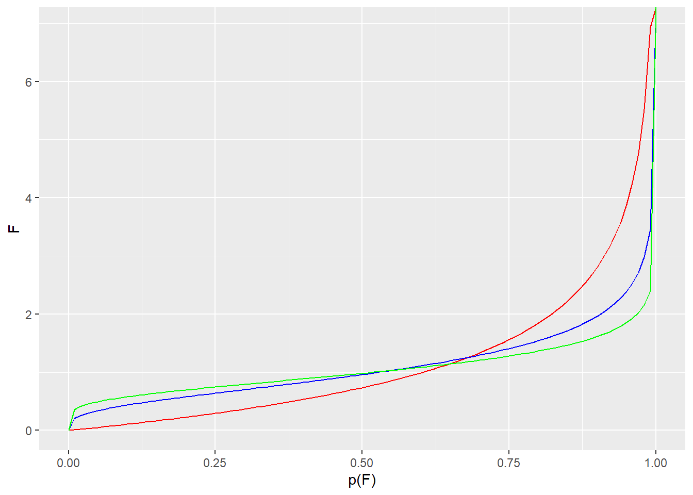

Chapter 27 One-way ANOVA Completely Randomized
You probably should read about the ANOVA big picture).
27.1 Using ezANOVA
R has several functions to run ANOVA. We are mostly going to use ezANOVA from the ez package in this course. The syntax for defining the ANOVA analysis is a bit more clear in ez, especially if we are new to ANOVA.
This chapter runs through an analysis of a one-way completely randomized ANOVA data set as ‘how to’ example.
27.2 The chickwt data set
This data set is in R’s base. It compares the influence of 6 different types of food sources on chick weight. We have one predictor variable, the factor ‘feed’, which is tested at 6 different levels (the various food sources).
There is one continuous outcome variable (weight). We assume the chicks are out bred, and thus not intrinsically-related, and that they have been randomly assigned to a level of feed, and have been weighed after a period of time consuming that feed.
This is a classic one-way completely randomized ANOVA design.
This chapter illustrates how to go through an analysis of the data.
27.2.1 Inspect the data
The next few scripts involve inspecting the data set, which should always be done prior to running any statistical tests.
data(chickwts)
#take a look at the data structure, depending upon how you like to view data
str(chickwts)## 'data.frame': 71 obs. of 2 variables:
## $ weight: num 179 160 136 227 217 168 108 124 143 140 ...
## $ feed : Factor w/ 6 levels "casein","horsebean",..: 2 2 2 2 2 2 2 2 2 2 ...## weight feed
## 1 179 horsebean
## 2 160 horsebean
## 3 136 horsebean
## 4 227 horsebean
## 5 217 horsebean
## 6 168 horsebean
## 7 108 horsebean
## 8 124 horsebean
## 9 143 horsebean
## 10 140 horsebean
## 11 309 linseed
## 12 229 linseed
## 13 181 linseed
## 14 141 linseed
## 15 260 linseed
## 16 203 linseed
## 17 148 linseed
## 18 169 linseed
## 19 213 linseed
## 20 257 linseed
## 21 244 linseed
## 22 271 linseed
## 23 243 soybean
## 24 230 soybean
## 25 248 soybean
## 26 327 soybean
## 27 329 soybean
## 28 250 soybean
## 29 193 soybean
## 30 271 soybean
## 31 316 soybean
## 32 267 soybean
## 33 199 soybean
## 34 171 soybean
## 35 158 soybean
## 36 248 soybean
## 37 423 sunflower
## 38 340 sunflower
## 39 392 sunflower
## 40 339 sunflower
## 41 341 sunflower
## 42 226 sunflower
## 43 320 sunflower
## 44 295 sunflower
## 45 334 sunflower
## 46 322 sunflower
## 47 297 sunflower
## 48 318 sunflower
## 49 325 meatmeal
## 50 257 meatmeal
## 51 303 meatmeal
## 52 315 meatmeal
## 53 380 meatmeal
## 54 153 meatmeal
## 55 263 meatmeal
## 56 242 meatmeal
## 57 206 meatmeal
## 58 344 meatmeal
## 59 258 meatmeal
## 60 368 casein
## 61 390 casein
## 62 379 casein
## 63 260 casein
## 64 404 casein
## 65 318 casein
## 66 352 casein
## 67 359 casein
## 68 216 casein
## 69 222 casein
## 70 283 casein
## 71 332 caseinIt is also helpful to calculate some descriptive stats for inspection. Since the design is obviously about testing the different levels of feed, use the group_by function of tidyverse to summarize by feed level. The kable function from knitr makes a nicer output.
cw1 <- chickwts %>%
group_by(feed) %>%
summarise(
mean= mean(weight),
median=median(weight),
sd= sd(weight),
n = n(),
var=var(weight)
)## `summarise()` ungrouping output (override with `.groups` argument)| feed | mean | median | sd | n | var |
|---|---|---|---|---|---|
| casein | 323.5833 | 342.0 | 64.43384 | 12 | 4151.720 |
| horsebean | 160.2000 | 151.5 | 38.62584 | 10 | 1491.956 |
| linseed | 218.7500 | 221.0 | 52.23570 | 12 | 2728.568 |
| meatmeal | 276.9091 | 263.0 | 64.90062 | 11 | 4212.091 |
| soybean | 246.4286 | 248.0 | 54.12907 | 14 | 2929.956 |
| sunflower | 328.9167 | 328.0 | 48.83638 | 12 | 2384.992 |
We can see that the means and medians are about equal within each group. That’s a quick way to suggest no skew. Overall sample size is 71, distributed as 10-14 replicates per group, it’s a little unbalanced. But within acceptable limits. The variances are not equivalent, but are they unequal? Levene’s test in the ANOVA will provide that answer. But this is a pretty small sample size. Whatever that output we will take it with salt.
Plot the data for a look. Simply looking at the data graphically goes a long way to ensuring this is a one-way ANOVA design. Jitter plots are a great way to see group data like this. I like the crossbar geom to overlay some summary stats.
ggplot(chickwts, aes(feed, weight))+
geom_jitter(width = 0.2, size=2) +
stat_summary(fun.data = mean_sdl,
fun.args = list(mult=1),
geom="crossbar",
width=0.2,
color="red"
) +
theme_classic()
27.3 Run the ANOVA
We can imagine designing an experiment like this with either of 3 experimental objectives in mind.
Perhaps we’re interested mostly in whether any feeds are better than others for achieving weight gain? We could answer that by making all possible pairwise comparisons. Since there are 6 levels of the factor feed, that would involve \(m=\frac{6(6-1)}{2}=15\) comparisons.
Imagine casein is the standard feed, and we wish to know if any of the other feeds differ from this standard? We would compare casein to every feed. That would involve only 5 comparisons.
Perhaps we just want to know if any of the feeds differ in causing weight gain, but we aren’t interested in which specific feeds differ? We could answer that question using the F-test result, and not comparing any groups post hoc.
Each of those objectives are scientifically-driven. They should be declared before running an experiment so that an unbiased analysis is conducted after the data are in.
Other than, perhaps, how we order our data in the data set, which of these objectives is true doesn’t influence how we run the ezANOVA function per se. However, the objective will influence which post hoc analysis is performed.
27.3.1 Run the chickwts One Way ANOVA
First, ezANOVA requires a ‘wid’, which is a unique ID variable for each independent replicate.
We need to add one to the chickwts data set. Since all the measures are independent, we’ll just do that by row number. At the same time we’ll convert the integer to a factor so ezANOVA won’t bark at us.
You should look at R’s help for ezANOVA ?ezANOVA to understand these test arguments. The help page is pretty clear for most of these.
Since we don’t use the term ‘dependent variable’ much in this course, to be clear, ‘dv’ is the outcome response variable..the dependent variable. We have to specify it in the ezANOVA arguments.
If measurements for levels of the factor are not intrinsically-linked, if they are distributed to each replicate independently, the design is completely randomized. That factor should be listed in the function using a between argument.
If measurements for levels of the factor are intrinsically-linked, it is a related/repeated measures design. List it as a ‘within’ argument, rather than ‘between’.
Here, the feed factor is between. Every chick was randomly assigned a level of feed.
Notice that ezANOVA is a function. Use it to create a list object called my.ezaov, which has all of the output information. We can call all of the output at once, or we can call specific elements from the my.ezaov object to see the results.
my.ezaov <- ezANOVA(
data = chickwts,
wid = ID,
dv = weight,
between = feed,
type = 2,
return_aov = T,
detailed = T)## Warning: Data is unbalanced (unequal N per group). Make sure you specified a
## well-considered value for the type argument to ezANOVA().## Coefficient covariances computed by hccm()## $ANOVA
## Effect DFn DFd SSn SSd F p p<.05 ges
## 1 feed 5 65 231129.2 195556 15.3648 5.93642e-10 * 0.5416855
##
## $`Levene's Test for Homogeneity of Variance`
## DFn DFd SSn SSd F p p<.05
## 1 5 65 4389.241 76154.92 0.7492639 0.5896095
##
## $aov
## Call:
## aov(formula = formula(aov_formula), data = data)
##
## Terms:
## feed Residuals
## Sum of Squares 231129.2 195556.0
## Deg. of Freedom 5 65
##
## Residual standard error: 54.85029
## Estimated effects may be unbalanced27.3.2 Interpreting the One-Way CR ANOVA Output
The ezANOVA output prints 3 list objects by default:
- $ANOVA (which is the first data frame)
- $
Levene's Test for Homogeneity of Variance(which is the 2nd data frame) - $aov (which is the end of the console output and is an important statistical object)
In fact, there is a great deal more computed that is not printed, which you can visualize in the console by typing str(my.ezaov).
27.3.2.1 $ANOVA: The ANOVA table
For a CR one way ANOVA design, the SS are partitioned as follows, in general: \(SS_{total}=SS_{model}+SS_{residual}\).
In this example, \(SS_{model}= SS_{feed}\).
Thus, the ANOVA table summarizes the feed model.
The DFn = 5 corresponds to the 6 groups, less 1 degree of freedom (one is lost to calculate mean of groups (sort of)) for the model source of variance.
The DFn = 65 corresponds to the degrees of freedom for the residuals (one df is lost per group to calculate group means).
Therefore, this ANOVA tests a feed model against a null F distribution with 5 and 65 degrees of freedom.
\(F=MS_{feed}/MS_{residual}=15.3648\), where \(MS = SS/df\). The SS can be found in the $aov output.
- ges = generalized eta-squared.
ges is an effect size parameter for ANOVA. For this particular experimental design, \(ges=\frac{SS_n}{SS_n+SS_d}\). In other words, ges summarizes the variation associated with the model as a fraction of the total variation in the data.
Thus, 54.16% of the variation in weight is attributable to the different levels of feed in the experiment. In other words, the model explains 54.16% of the variation in the data.
Think of eta-squared, partial eta-squared, and generalized eta-squared as all related to the more commonly understood \(R^2\), the so-called coefficient of regression. They are each calculated differently, but are related as estimates for how much of the variation is due to the model. ges takes on values from 0 to 1. Higher values indicate a greater degree of the overall variation is due to the factor tested in the experiment.
Having said that, it’s a bit of a Goldilocks statistics by itself. It has more value as a way to describe fits of nested models.
27.3.2.2 $aov
This table is an important object because it can be passed into certain posthoc tests, facilitating analysis.
It provides the accounting for the sum of squares and degrees of freedom, while calculating the residual standard error. It is somewhat redundant with the $ANOVA table, though the residual standard error can come in handy.
- DFn=degrees freedom for numerator. k-1, where k = levels of factor.
- DFd=degrees freedom for denominator. n-k, where n = number of independent replicates.
- SSn & SSd = sum of squares for model and residual, respectively
- Residual standard error is a parameter that estimates the precision by which the data fit the model, and is in units of the outcome variable, weight. \(SE\) is the square root of the residual variance: \(S_{y.x}=\sqrt{\frac{SS_{residual}}{df_{residual}}}\)
If \(S_{y.x}\) were zero, there would be no residuals. The data points would all rest at the value of the group means. The data would fit perfectly to a model of 6 group means at their observed values. \(S_{y.x}\) therefore is a descriptive statistic that declares how much error, or the degree by which the data is unexplained by the model. It has some utility for calculating confidence intervals and power analysis as well.
27.3.2.3 The F test
The scientific prediction for this experiment is that chick weights will vary depending upon the type of feed they are grown on. The null is that their weights will be roughly the same, irrespective of food source.
ANOVA tests this hypothesis through the variance parameter. The question at hand is whether the variance associated with the model, one of 6 different feed group means, is fractionally greater than the residual variance in the sample.
The null statistical hypothesis is that the variance associated with the different levels of feed is less than or equal to the residual variance. Therefore, the alternate hypothesis is the variance associated with feed is greater than residual variance.
\(H_0: MS_{feed}\le MS_{residual}\), \(H_1: MS_{feed}>MS_{residual}\)
Because of the relationship of group means to variance, it is just as valid to express the null hypothesis in terms of the group means, and that can be proven mathematically by a competent statistician (of which I am not):
\(H_0: \mu_a=\mu_b=\mu_c=\mu_d=\mu_e=\mu_f\)
Though, strictly, rejecting the null doesn’t mean that all group means differ from each other, it just means that some of them differ. \(H_1: \mu_a\ne\mu_b\ne\mu_c\ne\mu_d\ne\mu_e\ne\mu_f\)
The F statistic of 15.3648 is extreme for a null F distribution of 5 and 65 degrees of freedom. The very low p-value illustrates this extremeness.
We can reject the null and conclude that differences in effect on chick weights exist between this group of feeds.
27.3.2.4 Levene’s test for homogeneity of variance
Levene’s test determines whether there is a substantial level of differences in variance between groups. Levene’s test is run as a check to determine if the groups variance is homogeneous, as homoskedasticity is one of the validity assumptions of ANOVA.
Levene’s test statistic is calculated as follows:
\[W=\frac{(n-k)}{(k-1)}\frac{\sum\limits_{i=1}^{k}n_i(\bar Z_i-\bar Z)^2}{\sum\limits_{i=1}^{k}\sum\limits_{j=1}^{n_i}(Z_{ij}-\bar Z_i)^2}\]
where \(Z_{ij}=|x_{ij}-\bar x_i|\) and \(Z_i\) are the group means and \(\bar Z\) is the overall mean of \(Z_{ij}\).
The null hypothesis of the Levene test is rejected when \(W>F_{(\alpha,\ k-1,\ n-k)}\), where the F is the critical value.
Levene’s test output is a 2nd ANOVA table, and can easily be confused with the ANOVA output. Levene’s test lacks a \(ges\) parameter, nor does it have a column that lists the factor name.
If the Levene’s F value is low and the p-values is high, as is the case here, we can’t reject the null that the variances are the same. In this way, the variance homogeneity assumption is validated.
If this were not the case, we have two options.
Option 1: Simply ignore the result. The luck of the draw with small samples can explain group differences in variance, where none really exists. It is hard to gauge the impact of any one violation on our inference. It may be very modest or it may be substantial. With data in hand, it is too late to come up with an on-the-fly solution if not specified in the planning stages.
Option 2: Transform the data to homogenize outliers and variance, or switch the analysis to a Kruskal-Wallis nonparametric test.
27.4 Post hoc pairwise comparisons
When the ANOVA F test for the factor is extreme we may be interested in knowing which treatments differ. That’s achieved by conducting post hoc analysis. These typically involves multiple group comparisons.
There are two fundamental options for CR posthoc testing: p-value adjustment or a range test. Each are illustrated below, but only one method should be conducted in real life. That method is chosen in advance during the planning stages.
For the adjusted p-value method, use the pairwise.t.test function set up a matrix of all possible group comparisons. The Bonferroni p-value adjustment procedure is selected for best possible control of type1 error. This may miss some true differences.
For each comparison we are testing the null hypothesis that the two group means are the same: \[H_0: \bar y_i = \bar y_j\]
allPairs <- pairwise.t.test(chickwts$weight, chickwts$feed, paired=FALSE, alternative="two.sided", pooled.sd=TRUE, p.adjust= "bonf")
allPairs##
## Pairwise comparisons using t tests with pooled SD
##
## data: chickwts$weight and chickwts$feed
##
## casein horsebean linseed meatmeal soybean
## horsebean 3.1e-08 - - - -
## linseed 0.00022 0.22833 - - -
## meatmeal 0.68350 0.00011 0.20218 - -
## soybean 0.00998 0.00487 1.00000 1.00000 -
## sunflower 1.00000 1.2e-08 9.3e-05 0.39653 0.00447
##
## P value adjustment method: bonferroniTo quickly scan which comparisons are below the p < 0.05 threshold we apply a simple custom extreme function across the matrix:
## casein horsebean linseed meatmeal soybean
## horsebean TRUE NA NA NA NA
## linseed TRUE FALSE NA NA NA
## meatmeal FALSE TRUE FALSE NA NA
## soybean TRUE TRUE FALSE FALSE NA
## sunflower FALSE TRUE TRUE FALSE TRUEWith the Bonferroni correction we are able to reject 8 of the 15 null hypotheses. For each comparison corresponding to a value of TRUE we can reject the null and conclude that their means are not equivalent.
Adjusting p-values for subsets of comparisons
Often, we don’t want to burn so much type1 error making scientifically uninteresting comparisons. In such cases, we instead want to compare subsets. For example, perhaps all we wanted to do was compare each of the feeds to casein.
Here’s a three step procedure for doing just that.
Step1: First, run the pairwise.t.test function, setting the argument p.adjust="none". The output includes a matrix of p-values we’ll name allPairsn, providing all possible comparisons.
#just repeating from above
allPairsn <- pairwise.t.test(chickwts$weight, chickwts$feed, p.adjust= "none")Step2: Select from the allPairs matrix only the p-values that correspond to the comparisons you’d like to make. Name that vector of unadjusted p-values, selectPairs. This takes a bit of cleverness depending on what you want to grab from the matrix.
For example, we only want to compare all of the diets to casein. The comparisons we want are all in the first column. Use your matrix indexing skillz to grab only the unadjusted p-values from that first column:
## horsebean linseed meatmeal soybean sunflower
## 2.067997e-09 1.493344e-05 4.556672e-02 6.654079e-04 8.124949e-01## horsebean linseed meatmeal soybean sunflower
## TRUE TRUE TRUE TRUE FALSEStep3: Now pass these unadjusted p-values in the selectPairs vector into the p.adjust function.
The output of this step is a vector of adjusted p-values for the selected group of comparisons.
## horsebean linseed meatmeal soybean sunflower
## 1.033998e-08 7.466720e-05 2.278336e-01 3.327039e-03 1.000000e+00Which of these are extreme? If it’s not clear by inspection (or too large), use a simple Boolean:
## horsebean linseed meatmeal soybean sunflower
## TRUE TRUE FALSE TRUE FALSEAlthough the p-values differ in this selected group compared to the full matrix, the inference remains the same. We can conclude that chick weights on horsebean, linseed and soybean feeds differ from that on casein feed.
27.4.1 Range tests
All range tests operate very differently from p-value adjustment methods.
Range tests compare each of a data set’s differences between group means to a critical value for the difference between two group means, which is calculated based upon the number of groups and their sample sizes. Any differences between group means that exceed the critical value difference are deemed “significant”. In addition, these functions calculated adjusted p-values and adjusted confidence intervals given the method selected.
One-way completely randomized ANOVAs, as opposed to related measures ANOVA, lend themselves well to range tests because the posthoc questions revolve around the differences between group means. Range tests are nice because they compute confidence intervals adjusted for multiple comparisons, in addition to producing p-values adjusted for multiple comparisons.
But these should be avoided on related measures ANOVA, due to the fact that range tests are designed for unpaired comparisons, not for paired comparisons.
27.4.1.1 Dunnett’s test
In some designs we are frequently interested in a comparison back to a control value. These are referred to as dependent comparisons, because every comparison is back to the same group mean. Dunnett’s test was created for exactly this type of situation.
Let’s imagine the researcher is interested in knowing if any of the feeds cause difference in chick weights compared to the casein feed.
##
## Dunnett's test for comparing several treatments with a control :
## 95% family-wise confidence level
##
## $casein
## diff lwr.ci upr.ci pval
## horsebean-casein -163.383333 -223.95852 -102.80815 6.3e-09 ***
## linseed-casein -104.833333 -162.58951 -47.07716 8.6e-05 ***
## meatmeal-casein -46.674242 -105.72847 12.37999 0.1670
## soybean-casein -77.154762 -132.81000 -21.49952 0.0032 **
## sunflower-casein 5.333333 -52.42284 63.08951 0.9995
##
## ---
## Signif. codes: 0 '***' 0.001 '**' 0.01 '*' 0.05 '.' 0.1 ' ' 1Note how the R method is to subtract the casein control from the test groups. We can reject the null that chick weight on casein is the same as on horsebean, linseed and soybean. There is no evidence that chick weight differs on meatmeal and sunflower compared to casein.
27.4.1.2 Reporting the result
If you have CI’s, flaunt them.
When using Dunnett’s there is no need to report both the 95% CI and the p-value, since they effectively show the same thing (any adjusted p-value above 0.05 will also have a 95% CI that includes the value of zero). We use either for inference.
“Chick weights differ on feed type (one-way completely randomized ANOVA, F(5, 65)=15.36, p=5.9e-10). Specifically, posthoc Dunnett’s test show group mean chick weights differ between casein compared to horsebean (-163, adjusted 95%CI -223 to -102), linseed(-104, adjusted 95%CI -162 to -42), and soybean (-77,adjusted 95%CI -132 to -21)”
27.5 Summary
One-way completely randomized ANOVA is for experiments where every measurement represents an independent replicate. The results of the F test for the main effect tell us whether or not your one factor, no matter how many levels, has an effect on the response. We choose a posthoc analysis only if interested in knowing which levels of the factor might explain the positive F test. We can use either range tests or p-value adjusted pairwise.t.tests in posthoc *The range test functions provide effect sizes and adjusted confidence intervals